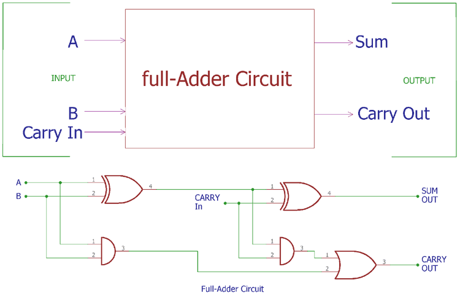
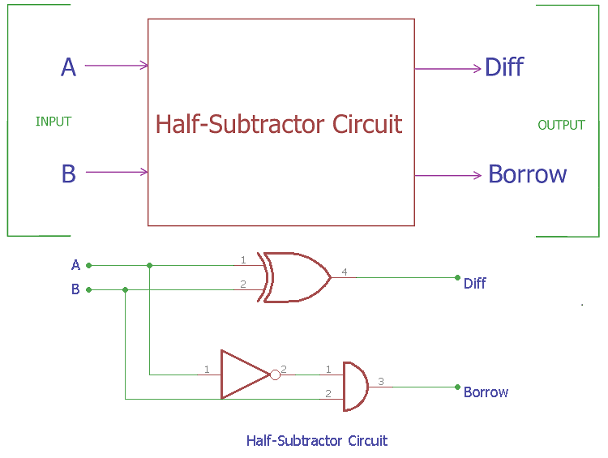
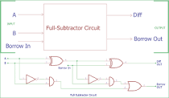
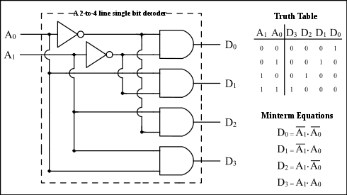
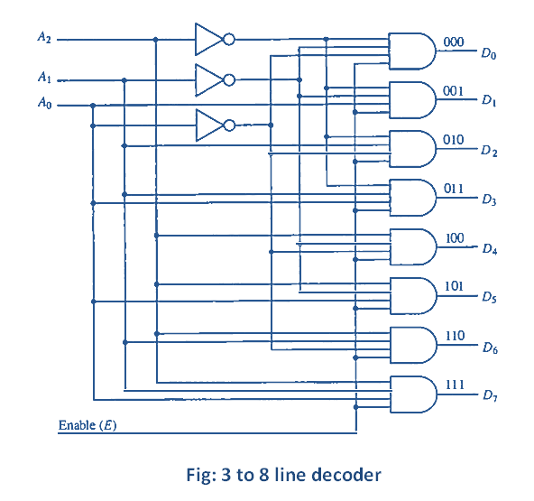
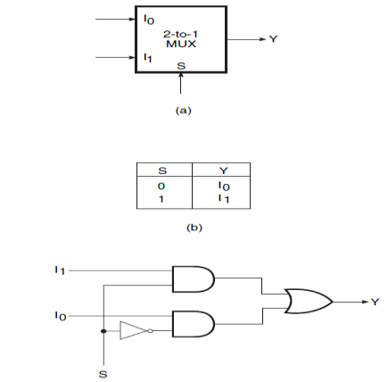
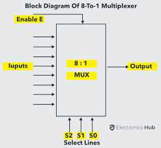
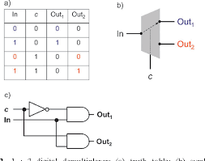
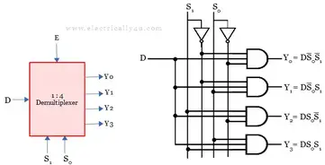
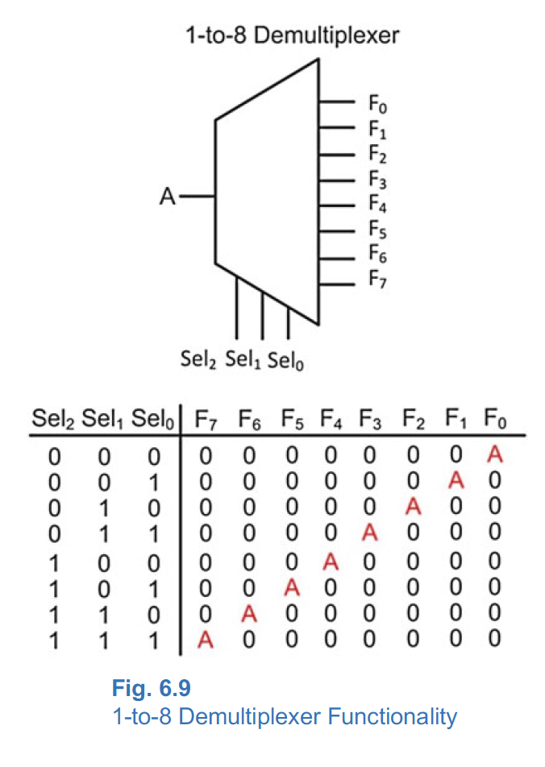

Half Adder
The half adder is a basic building block for more complex adder circuits. It performs binary addition of two single-bit inputs, A and B, and provides two outputs, SUM and CARRY.

Full Adder
The full adder is used to add three 1-bit binary numbers A, B, and carry C. It has three input states and two output states i.e., sum and carry.
Half Subtractor
The full adder is used to add three 1-bit binary numbers A, B, and carry C. It has three input states and two output states i.e., sum and carry.
Full Subtractor
The subtractor is used to subtract two 1-bit binary numbers A and B. It has two input states and two output states i.e., difference and borrow.
2*4 decoder
The multiplexer is a circuit that selects one input signal and sends it to the output. It has two or more input signals, a selector signal, and one output signal.
3*8 decoder
The multiplexer is a circuit that selects one input signal and sends it to the output. It has two or more input signals, a selector signal, and one output signal.
2*1 Multiplexer
The multiplexer is a circuit that selects one input signal and sends it to the output. It has two or more input signals, a selector signal, and one output signal.
4*1 Multiplexer
The multiplexer is a circuit that selects one input signal and sends it to the output. It has two or more input signals, a selector signal, and one output signal.

8*1 Multiplexer
The multiplexer is a circuit that selects one input signal and sends it to the output. It has two or more input signals, a selector signal, and one output signal.
1*2 Demultiplexer
The demultiplexer is a circuit that takes one input signal and distributes it to one of several output signals. It has one input signal, a selector signal, and two or more output signals.
1*4 Demultiplexer
The demultiplexer is a circuit that takes one input signal and distributes it to one of several output signals. It has one input signal, a selector signal, and two or more output signals.
1*8 Demultiplexer
The demultiplexer is a circuit that takes one input signal and distributes it to one of several output signals. It has one input signal, a selector signal, and two or more output signals.
